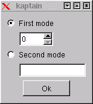
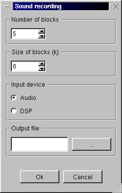
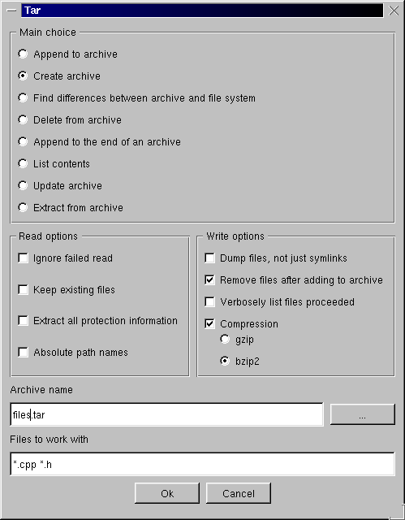
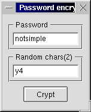

| [Top] | [Contents] | [Index] | [ ? ] |
1. The Concepts of Kaptain 2. Invoking Kaptain 3. Grammar Scripts 4. Examples 5. External Control 6. Errors 7. Reference of Special Symbols A. Reference of Modifiers Concept Index Concept index.
This is a manual for Kaptain, the Universal Graphical Front-end.
Copyright © 2000-2004 Zsolt Terék
| [ < ] | [ > ] | [ << ] | [ Up ] | [ >> ] | [Top] | [Contents] | [Index] | [ ? ] |
Kaptain is a universal graphical front-end. It was originally developed in order to provide a simple and efficient tool for creating dialog-based interface for command line programs. Now, its communication features allow it to serve the graphical user interface of a program without directly using a graphical library, such as GTK or Qt.
When Kaptain is started, it reads a so-called grammar script. This is a text file, which contains a description in a form of a context-free grammar and optionally some other instructions. This manual refers to the input file of Kaptain as a grammar script. See 3. Grammar Scripts for a complete overview on grammar script syntax.
According to the grammar script, Kaptain builds a graphical dialog box. Certain parts of the dialog box are associated with certain elements of the grammar. This association is quite natural, thats why Kaptain's language is so easy to learn.
In the dialog box, several widgets are present. These objects can be manipulated by the user--text can be entered into input fields, checkboxes can be set on and off. When a certain push button is pressed, Kaptain reads the data specified by the user in the dialog box and uses the context-free grammar to generate text. The generated text is then executed as a command, just like as if it were entered at the command prompt.
Suppose we have a program named prog that runs in two different
modes. For its first mode, an integer parameter should be given, and the
second mode needs some text as parameter. An example for starting
prog in its first mode:
start -> "prog " parameter ; parameter -> "-x " @integer | "-y " @string ; |
The grammar in the example above is almost enough for Kaptain to build a dialog containing an integer input box and a string input field, each having a radio button. Additionally a push button is needed and some text might be specified in order to label the input fields.
Given a file containing such a description, Kaptain parses the grammar and builds a dialog box. When the push button is pressed, the text is generated according to the settings of the user.
The complete grammar for the program above might look like this:
start -> "prog " parameter @action(start)="Ok"; parameter -> x | y ; x "First mode" -> "-x " @integer; y "Second mode" -> "-y " @string; |

According to the settings in the figure, the generated text is `prog -x 0', since the first radio button is selected.
| [ < ] | [ > ] | [ << ] | [ Up ] | [ >> ] | [Top] | [Contents] | [Index] | [ ? ] |
Kaptain needs a grammar script in order to display the dialog. This is usually located in a file, and the name of that file is passed to Kaptain as an argument. The grammar script can be written to the standart input of Kaptain, too.
The running mode of Kaptain can be normal or test mode. In test mode, commands are not executed, they are printed to the standard output instead.
The command line of Kaptain generally looks like this:
Kaptain [options] file |
Some options are used to specify running mode, while others set up different kinds of communication channels for external control. Kaptain accepts the following switches and parameters:
These are the possible parameters and options accepted by Kaptain called from the command prompt.
| [ < ] | [ > ] | [ << ] | [ Up ] | [ >> ] | [Top] | [Contents] | [Index] | [ ? ] |
The input file of Kaptain is a grammar script. It contains the description of a context-free grammar in a form of rules. Beside the rules, it might also contain so-called descriptions and constraints.
Comments can be placed in grammar scripts. Hashmark (`#') is a comment character, which means that all characters after the hashmark up to the end of the line are ignored together with the hashmark. This is not true if the hashmark appears inside a quoted string, see 3.3 Quotations.
3.1 Grammars 3.2 Special symbols 3.3 Quotations 3.4 Regulas expressions and translations 3.5 Using text manipulation in grammar rules
| [ < ] | [ > ] | [ << ] | [ Up ] | [ >> ] | [Top] | [Contents] | [Index] | [ ? ] |
The program Kaptain reads an input file containing the description in the form of a context-free grammar. The concept of context-free grammar is coming form formal linguistic. A grammar is built up of several rules. Each rule contains a left hand side symbol and some symbols on the right hand side separated by an arrow:
start -> "progname" options parameters ; |
Nonterminal symbols are similar to variables in other programming languages. Their name can contain alphanumeric characters and underscore, and should not begin with numbers.
Terminal symbols are written between quotation marks. Kaptain has many ways for specifying terminal symbols, see 3.3 Quotations
The text generation process is an iterated application of rules on the current sentence. Starting from the nonterminal symbol `start', every step consists of an application of a rule. This means that a nonterminal symbol in the current sentence--which is the left hand side of the applied rule--is replaced by the symbols on right hand side of the rule. This process ends if there are no more nonterminal symbols in the current sentence.
To illustrate text generation, let us have the following grammar:
start -> "Your " animal "is " size ; animal -> "dog " ; animal -> "cat " ; size -> "big." ; size -> "small." ; |
Starting with the sentence `start', only the first rule can be applied. The current sentence is then `"Your " animal "is " size'. Here both `animal' and `size' is nonterminal, thus any of the rules but the first can be applied. This way exactly four different sentences can be generated by this grammar:
Your dog is big. Your cat is small. Your dog is big. Your cat is small. |
As a syntactic simplification, different rules of the same left hand side can be written in one complex rule using `|' character as a separator of the different right hand sides. The grammar above is equivalent to the following:
start -> "Your " animal "is " size ; animal -> "dog " | "cat " ; size -> "big." | "small." ; |
The set of sentences that can be generated using a certain grammar is called the language generated by that grammar. Formal languages is a branch of mathematics that deals with languages and grammars.
3.2 Special symbols
| [ < ] | [ > ] | [ << ] | [ Up ] | [ >> ] | [Top] | [Contents] | [Index] | [ ? ] |
The expression power of grammars is great. However, sometimes it is quite comlicated to express simple things. For example, the definition of numbers is quite long and messy: (Of course, it is possible to write a different grammar for the numbers, this is not a unique definition.)
number -> digits ;
digits -> digit digits | digit ;
digit -> "0" | "1" | "2" | "3" | "4"
| "5" | "6" | "7" | "8" | "9" ;
|
Beside terminal and nonterminal symbols, Kaptain offers so-called special symbols to appear in grammars. Special symbols always start with `@'. Such a symbol almost always refers to a widget in the dialog. For example `@integer' represents a widget, which is a rectangular area where the user can write a decimal number. The special symbol evaluates to the value that it contains at the time of the text generation process.
Special symbols may accept different number of parameters and an optional initial value. The general form is as follows:
@specname(param_1, param_2, ..., param_n)=initvalue |
@specname @specname=initvalue @specname(param_1, param_2, ...) @specname(param_1, param_2, ...)=initvalue |
The complete reference of special symbols can be found in 7. Reference of Special Symbols.
| [ < ] | [ > ] | [ << ] | [ Up ] | [ >> ] | [Top] | [Contents] | [Index] | [ ? ] |
\n, \t, \", \\. Other characters
are not modified if preceeded by backslash. This way one can place
double quote character inside a string:
"Double quotes \" are easy to write." |
Double quotes " are easy to write. |
An other meta-character is the dollar sign ($), which is used for
inserting environmental variables into strings. For example in
"$HOME/hello" the sequence $HELLO is replaced by the
content of the HELLO environmental variable. If the environmental
variable name contains other characters than letters, the following form
should be used: ${ANY89}.
This kind of quotation should always end on the same line it was started. If the end-of-line symbol is reached within the string, Kaptain prints a warning.
'No way to have apostrophes in this string' |
`ls`
evaluates to a string which contains the file names of the current
directory. An easy way to create a list box containing the available
files is the following:
@list(`ls`) |
ls returns the files separated by a newline symbol,
`@list' inserts the different lines of its parameter value as
different list items. See section 7. Reference of Special Symbols.
The commands are passed to `/bin/sh', so any shell constructions can be given, e.g., pipes.
Using backquots is a strong form of quoting: there are no special characters. As a consequence of this, no backquote (`) can appear inside.
q%any characters except the delimiter% |
any characters except the delimiter |
% can be replaced by any
except the following: letters, numbers, ;().=:_- and
whitespace.
The letter `q' at the beginning stands for quotation.
x%shell command line not containing the delimiter% |
shell command line not containing the delimiter |
When Kaptain parses two less signs (<<), the text up to the end of the
line is stored as a delimiter string and it starts to scan a quotation.
The quotation is ended if a line occurs that is exactly same as the
delimiter string.
... <<LINE_DELIMITER Here goes the long text LINE_DELIMITER |
Here goes the long text |
<< sequence needs not to be on the
beginning of a line. The quotation above is equivalent to the following:
... "Here goes\nthe long text" |
| [ < ] | [ > ] | [ << ] | [ Up ] | [ >> ] | [Top] | [Contents] | [Index] | [ ? ] |
3.4.1 Regular expressions 3.4.2 Substitutions 3.4.3 Transliterations
All expressions mentioned here use / (slash) as bounding
character. This can be replaced by any expect letters, numbers, blanks,
underscore, hyphen and semicolon. But the beginning and the ending
bounding characters must be the same, there is no way to refer to that
character inside the expression. For example, instead of
m/hello/, one can write m%hello%, m^hello^, and so
on.
| [ < ] | [ > ] | [ << ] | [ Up ] | [ >> ] | [Top] | [Contents] | [Index] | [ ? ] |
Kaptain understands regular expressions like grep or perl. For a
detailed review, type man grep or man perlre at the
command prompt. You can give a regular expression as a parameter to some
special symbols, like this:
@string(m/$[0-9]*^/, ... |
Here m/$[0-9]*^/ means that the string value in the input line
must match the corresponding regular expression. In this
particular case, this means the user can only type integers into the
line input field.
When parentheses are found in the regular expression, a subexpression is
matched which can be referred with \d where d is a
digit. (\1, \2, ... \9) For example:
@multicol(m/([^[:blank:]]*)[[:blank:]]+([^[:blank:]]*)/,
"First_name Last_name",
"Albert Einstein Dr.", "Isaac Newton", "Rudolf Kepler")
|
"Dr." in line "Albert Einstein Dr." is not
matched by the second subexpression, so it is not displayed.
| [ < ] | [ > ] | [ << ] | [ Up ] | [ >> ] | [Top] | [Contents] | [Index] | [ ? ] |
Substitution is based on regular expression matching just like in perl or sed. (For some metacharacters, sed uses different syntax.) Substitution expression needs a regular expression and a substitution string as an input:
s/regexp/subs/ |
For example, to replace the words "dog" in a text to "cat, just write
s/dog/cat/g. That g at the end means that substitution is
repeated until the regular expression cannot match. In the second part,
you can refer to the matched subexpressions by \d, where d
is a digit. \0 refers to the whole matched string. Thus the
following swaps the first two words in the text:
s/([^[:blank:]]*)[[:blank:]]+([^[:blank:]]*)/\2 \1/ |
You can use it in listbox:
@list(s/([^[:blank:]]*)[[:blank:]]+([^[:blank:]]*)/\2 \1/,
"Albert Einstein Dr.", "Isaac Newton", "Rudolf Kepler")
|
| [ < ] | [ > ] | [ << ] | [ Up ] | [ >> ] | [Top] | [Contents] | [Index] | [ ? ] |
Transliteration is a very simple operation which replaces some characters with some others.
tr/abc/def/ |
a with d, b with e, c
with f.
| [ < ] | [ > ] | [ << ] | [ Up ] | [ >> ] | [Top] | [Contents] | [Index] | [ ? ] |
If you put some substitution or transliteration expressions on the beginning of the right side of a rule, those are executed each time when text is generated with that rule. This means that for
no_jim_and_joe -> s/Jim/Peter/g s/Joe/Peter/g tr/+/-/ @string; |
You can only mention s/// and tr/// operations just after
the arrow of a rule, but any number of such expressions can be written
there. They are executed from right to left, as it is expected naturally
(in my opinion).
| [ < ] | [ > ] | [ << ] | [ Up ] | [ >> ] | [Top] | [Contents] | [Index] | [ ? ] |
If you write your own grammars, and you think they might be useful for others, please send them to me terek@users.sourceforge.net, I will put them to the main Kaptain site.
4.1 Sound recording 4.2 Creating archives 4.3 Calling perl
| [ < ] | [ > ] | [ << ] | [ Up ] | [ >> ] | [Top] | [Contents] | [Index] | [ ? ] |
Let's record from the microphone connected to the computer. The command is
terek@fido:~$ dd count=5 bs=8 < /dev/audio > myfile.au |
#!/usr/local/bin/Kaptain
start:framed -> "dd count=" count " bs=" size "k <" input " > " output ;
count "Number of blocks" -> @integer=5 ;
size "Size of blocks (k)" -> @integer=8 ;
input "Input device" -> audio | dsp ;
audio "Audio" -> "/dev/audio" ;
dsp "DSP" -> "/dev/dsp" ;
output "Output file" -> @outfile("*.au");
|

| [ < ] | [ > ] | [ << ] | [ Up ] | [ >> ] | [Top] | [Contents] | [Index] | [ ? ] |
Here is a simple grammar, just witten in 5 minutes (may contain errors, check before you try to use it!)
#!/usr/bin/kaptn
start "Tar" -> tar buttons;
tar -> "tar " choice " " opt archive " " files;
opt:framed :horizontal -> extropt createopt ;
createopt "Write options" -> dump remove verb comp;
extropt "Read options" -> noerr keep same abs;
dump "Dump files, not just symlinks" -> "--dereference " | @;
noerr"Ignore failed read" -> "--ignore-failed-read " | @;
keep "Keep existing files" -> "-k " | @;
same "Extract all protection information" -> "-p " | @;
abs "Absolute path names" -> "-P " | @;
remove "Remove files after adding to archive"
-> "--remove-files " | @;
verb "Verbosely list files proceeded" -> "-v " | @;
comp -> compress | @;
compress "Compression" -> gzip | bzip;
gzip "gzip" -> "-z ";
bzip "bzip2" -> "--use-compress-program bzip2 ";
choice:framed -> work;
work "Main choice" -> concat | ! create | diff | del | append
| list | update | extract;
concat "Append to archive" -> "A";
create "Create archive" -> "c";
diff "Find differences between archive and file system" -> "d";
del "Delete from archive" -> "-delete";
append "Append to the end of an archive" -> "r";
list "List contents" -> "t";
update "Update archive" -> "u";
extract "Extract from archive" -> "x";
archive "Archive name" -> @infile;
files "Files to work with" -> @string ;
buttons :horizontal -> @action(tar)="OK" @close="Cancel";
|
It looks like this:  <#if output="html">
This produces a command like
tar c --remove-files --use-compress-program bzip2 files.tar *.cpp *.h |
| [ < ] | [ > ] | [ << ] | [ Up ] | [ >> ] | [Top] | [Contents] | [Index] | [ ? ] |
Kaptain can generate various texts, such as complicated pipes or a piece of perl code. To create your encrpyted password, use the perl command:
print crypt('passwd','sa')."\n";
|
Let's make the grammar:
#!/usr/local/bin/Kaptain
start "Password encrypter" -> code @action("perl","-e",code)="Crypt";
code:framed -> "print crypt('" passw "','" sa q%')."\n"% ;
passw "Password" -> @string="notsimple";
sa "Random chars(2)" -> @string(2)="y4";
|
Notice that the @action has three parameters; the perl
compiler is called without the shell, having two parameters: -e
and the evaluated text of code;
Simple but great: 
| [ < ] | [ > ] | [ << ] | [ Up ] | [ >> ] | [Top] | [Contents] | [Index] | [ ? ] |
This chapter describes the communication with the dialog in Kaptain.
The most interesting new feature in Kaptain 0.7 is the possibility of modifying the data in the widgets while Kaptain is running. For this, Kaptain needs a communication channel, which can be some network communicaton, redirection to an other program (using pipes) or the standard input and output.
On a communication channel Kaptain can recieve messages. There are two kinds of messages:
number -> @string |
number="Hello" |
Thus the general form of a setting message is:
nonterminal(par1,par2,...)=initvalue nonterminal=initvalue |
For a detailed overview of the possible parameters and initial values for a given type of special symbol, See section 7. Reference of Special Symbols.
start? <- to Kaptain start!<...here comes the generated text...> <- from kaptin |
| [ < ] | [ > ] | [ << ] | [ Up ] | [ >> ] | [Top] | [Contents] | [Index] | [ ? ] |
Kaptain reads the given file and parses the grammar according the rules in 3. Grammar Scripts.
If Kaptain finds something that is not according the rules described in this manual, it either signals an error or just a warning.
For example, warnings are generated if string, regular expressions, or other language constructs are opened but not closed till the end of the line. This is often handy when typoes are made in the grammar script.
On the other hand, Kaptain might find syntax error, and it immediately stops. In this case, the name of the last rule that was read successfully is printed together with its line number. Thus one has to look at the errors after the last correct rule. The most usual mistake is that the closing semicolon is forgotten from the end of a rule.
| [ < ] | [ > ] | [ << ] | [ Up ] | [ >> ] | [Top] | [Contents] | [Index] | [ ? ] |
@integer(-10,20)=4 |
This object evaluates to the value of the input field.
@string(20)="Hello" |
This object evaluates to the value of the input field.
@float="1.13".
This object evaluates to the value of the input field.
@string, but the regular expression
parameter is used to control the string that is entered. For example,
@regexp(m/^[ab]*$/) enables only characters a and
b to be entered. Initial string value is processed if it matches
the regular expression.
@list("hello",`ls`,"bye")
creates a list box containing the files from the current directory, and
two more lines: `hello' and `bye'.
If the given initial value is a number, it indicates which line should initially be selected. In case of a string, the first occurrence of that string is highlighted. Finally, if a regular expression is given as an initial value, the first line matching that regular expression will be selected.
If a substitution expression comes in the parameter list, it is
applied to the following string parameters until a new substitution
parameter is reached. This is useful to make different text in the
dialog box than that appears in the generated text. For example, in
@list(s/^.*://,"a:A","b:B","c:C") only the text after the colon
is inserted into the list box, and the whole string is used when the
symbol is evaluated. Note that the initial value selection described in
the previous paragraph is made by comparison to the original strings,
not the modified ones that appear on the screen.
The @list and @combo objects evaluate to the line from
which the currently selected line was generated using substitutions.
The @combow evaluates the line in the combo widget.
@button="{ok.png}".
creates a push button using the given initial value. If the value is in
the form of "{filename}", then it is considered to be a
pixmap file, otherwise the initial value is used as a text label. For
example @button="OK" creates a simple push button with label
`OK'.
One push button in a dialog can be the default button: This can be
achieved by putting a space to the beginning of its name. For example, a
default ok button is created for the following code: @button="
OK".
Creates a push button, which shows up a new dialog when pressed. The new dialog contains the code generated for a given nonterminal. The accepted parameters are the following: the nonterminal,font descriptor(string), minimum width and height (integers) and the closing button's text.
@preview(start,"Lucidatypewriter",300,200,"Close") |
@infile stands for a file open dialog, while
@outfile for file saving dialog. Using
@directory, one can select an existing directory.
The initial value given to these symbols is inserted to the input field at startup. When the button is pressed, the dialog is starting on the file/directory currently specified in the input field, if exists.
The file-like specials (@infile, @outfile) accept one
string argument. It can be a filter for the file selection
dialog. An example for a multiple filter is the following:
A complete example for @infile:
These items evaluate to the text in the input field.
This object is useful in cases when recursion is needed in the grammar. (In Kaptain, recursion is forbidden.) For example, if one or more file name is needed, one can write this:
filename -> @infile; box -> @container(filename); |
m/.../), all the following
string parameters are matched against this expression. Each such string
parameter stands for one line, which is separated according to the
regular expression.The subexpressions matched form the columns of the
given row. If there is no regular expression, the rows are separated at
the tab characters.
The forthcoming string parameters are the rows of the table, except the first one, which is specially the header. Initial value, if an integer is given determines the selected element in the table.
The @multicol special symbol generates to the content of the
selected row.
@multicol("Header 1\tHeader 2","data\tdata\tdata","abc")=1;
@multicol(m/([^ ]+) ([^ ]+) ([^ ]+)/,"1 2 3","a b c",
"xx yy zz")=0;
|
This object evaluates to the empty string.
Qt currently supports the following image file formats: PNG, BMP, XBM, XPM and PNM. It may also support JPEG, MNG and GIF, if specially configured during compilation. The different PNM formats are: PBM (P1 or P4), PGM (P2 or P5), PPM (P3 or P6).
Icons evaluate to empty string.
@edit("lucidatypewriter",300,200)="Hello,\nEditor!" creates an
editor field of 300x200 pixels, using a nice font.
If the given font name starts with a minus sign, it is treated as an XLDF (X Logical Font Description). Note that Qt does not handle wildcards in font descriptions, nor the aliases at this time. A fully specified font looks like this:
| [ < ] | [ > ] | [ << ] | [ Up ] | [ >> ] | [Top] | [Contents] | [Index] | [ ? ] |
Modifiers always begin with a colon and are related to the nonterminal after which they appear. For example:
start :framed :horizontal -> a b c ; |
means that a, b and c are placed horizontally one by one, and each is in a frame.
Modifiers usually have effect on the appearence of the dialog.
:horizontal is not present, otherwise right to left.
number :beside "Number" -> @integer | @ ; |
{icons/my.gif}Text", then the picture
mentioned between the braces will be placed beside the Text--this can
be very attractive.
:tree, it makes a second column appear in the
TreeView where the tooltip information is placed.
| [ < ] | [ > ] | [ << ] | [ Up ] | [ >> ] | [Top] | [Contents] | [Index] | [ ? ] |
| Jump to: | A B C D E F G H I L M N P Q R S T V W |
|---|
| Jump to: | A B C D E F G H I L M N P Q R S T V W |
|---|
| [Top] | [Contents] | [Index] | [ ? ] |
1. The Concepts of Kaptain
2. Invoking Kaptain
3. Grammar Scripts
3.1 Grammars4. Examples
3.2 Special symbols
3.3 Quotations
3.4 Regulas expressions and translations
3.4.1 Regular expressions3.5 Using text manipulation in grammar rules
3.4.2 Substitutions
3.4.3 Transliterations
4.1 Sound recording5. External Control
4.2 Creating archives
4.3 Calling perl
6. Errors
7. Reference of Special Symbols
A. Reference of Modifiers
Concept Index
| [Top] | [Contents] | [Index] | [ ? ] |
1. The Concepts of Kaptain
2. Invoking Kaptain
3. Grammar Scripts
4. Examples
5. External Control
6. Errors
7. Reference of Special Symbols
A. Reference of Modifiers
Concept Index
| [Top] | [Contents] | [Index] | [ ? ] |
| Button | Name | Go to | From 1.2.3 go to |
|---|---|---|---|
| [ < ] | Back | previous section in reading order | 1.2.2 |
| [ > ] | Forward | next section in reading order | 1.2.4 |
| [ << ] | FastBack | previous or up-and-previous section | 1.1 |
| [ Up ] | Up | up section | 1.2 |
| [ >> ] | FastForward | next or up-and-next section | 1.3 |
| [Top] | Top | cover (top) of document | |
| [Contents] | Contents | table of contents | |
| [Index] | Index | concept index | |
| [ ? ] | About | this page |